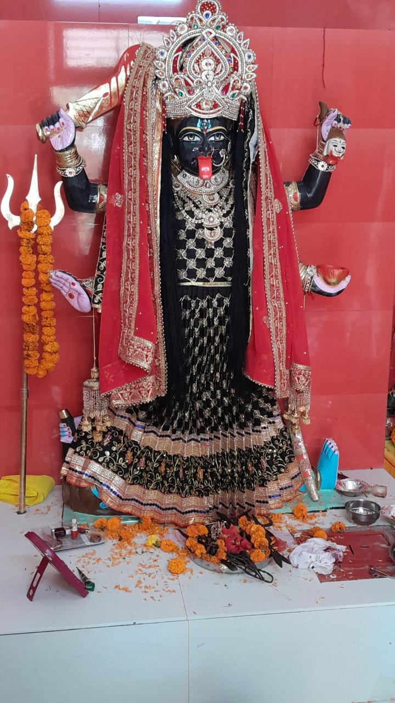

<header class="navbar">
  <div class="container">
    

    <nav>
      <ul>
        <li><a href="index.html" class="nav-link"><i class="fas fa-home"></i> Home</a></li>
        <li><a href="about.html" class="nav-link"><i class="fas fa-info-circle"></i> About</a></li>
        <li><a href="events.html" class="nav-link"><i class="fas fa-calendar-alt"></i> Events</a></li>
        <li><a href="gallery.html" class="nav-link"><i class="fas fa-images"></i> Gallery</a></li>
        <li><a href="tourism.html" class="nav-link"><i class="fas fa-map-marked-alt"></i> Tourism</a></li>
        <li><a href="committee.html" class="nav-link"><i class="fas fa-users"></i> Committee</a></li>
        <li><a href="registration.html" class="highlight-link"><i ></i> Registration</a></li>
      </ul>
    </nav>
  </div>
</header>
